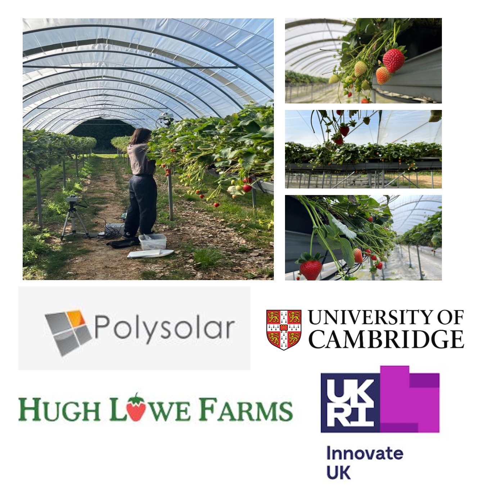

Agrivoltaics Research
Postdoctoral Research Fellow | University of Greenwich | Innovate UK-funded project | 2023–2025

- Investigated the impact of solar panel placements on crop growth and energy efficiency.
- Designed and optimized field experiments to evaluate plant physiological responses to varying light conditions.
- Collaborated with academic and industry partners to translate findings into real-world sustainable agriculture solutions.